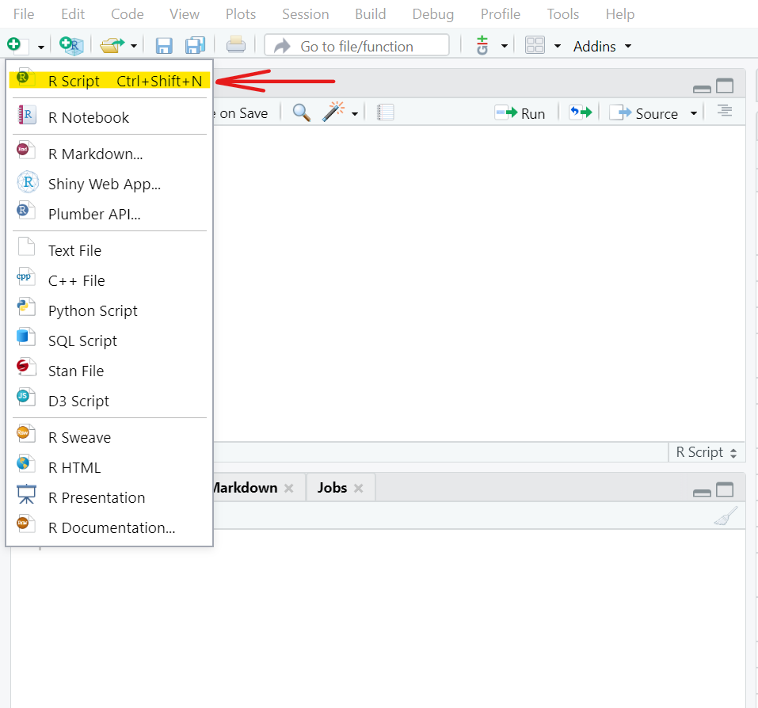
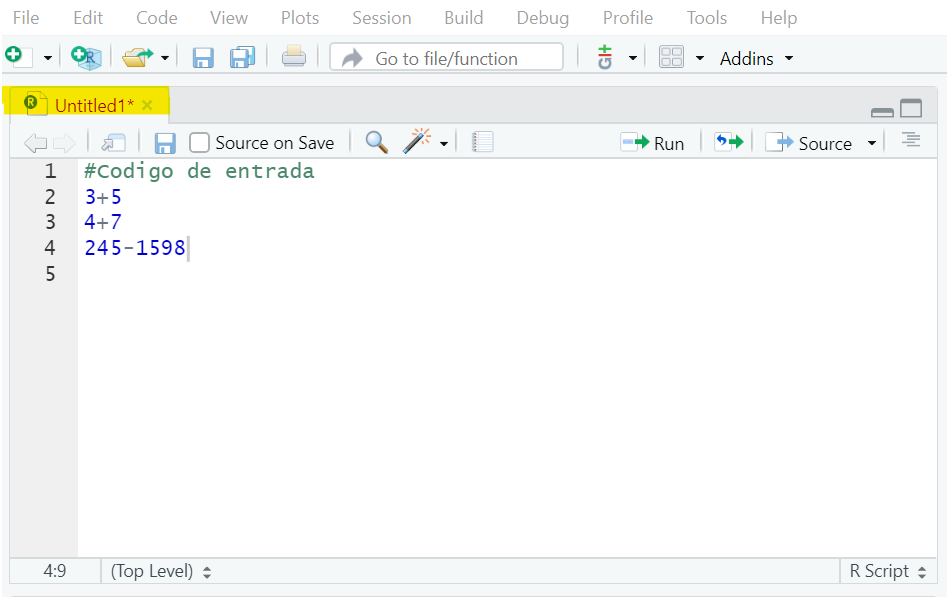

Capítulo 1 Primeros calculos en R
La idea es familiarizarse con el entorno de R y definirlo como lo que es, una “calculadora”. Es por esto que una forma de hacer calculos con la base instrumental que trae el programa, se presenta a continuación.
## [1] 8Si por otro lado se quiere un producto de 1255 con la \(\sqrt{25}\), entonces debe ser escrito de tal forma que
## [1] 6275Si se desea obtener una seguidilla de calculos ya toca escribirlos -como si fuera una lista- e implementarlos directamente, ya es:
13**2 #Potencia de un número
300/25 #Simple división entre 300 y 25
450+320+112 #Suma de tres números enteros
sqrt(12) #La raíz cuadrada del número 12Todas las operaciones que se deseen realizar en R que involucran operaciones matemáticas, pueden ser escritos directamente y obtendremos los resultados deseados.
Note que el operador (#) es para decirle al programa que no ejecute lo que se encuentra después de él, se usa para tomar notas o escribir algo al respecto en los archivos script de R, por ejemplo:
1.1 Script o archivo tipo bitacora
Los script son archivos que comunmente se desarrollan en formato de texto o de bloc de notas. Constituye la forma de llevar y controlar los codigos que se van a implementar los calculos y se referencian como bitacoras o diario, en el cuál se trabaja. Regularmente vienen instalados en el programa de R en un formato clasico o si ya se hace uso de R Studio que es un potente aliado1 en el entorno de ejecución del programa R, se le denomina IDE2.
Abrir un archivo tipo script en R Studio es sencillo, solo hay que ir al panel superior izquierdo del programa y debajo de la pestaña de File se encuentra el logo (+) y al dar click se le desplegará la lista de opciones y en el, es solo volver a dar click donde dice R Script, una forma mas rápida con el teclado es con las teclas Ctrl+Shift+N.
 Al crear un script en R Studio, podrá desarrollar y escribir los codigos con el cual va realizar su trabajo, por ejemplo:

1.2 Otras operaciones y calculos
En economía y en muchas ciencias sociales se hace uso extensivo de las matemáticas y de la estadística. Muchas veces será incluso necesario calcular o realizar algunas transformaciones en las variables para poder tener unas métricas mas informativas como son los logaritmos, valores absolutos, valores de forma exponencial o de notación científica, entre otros. Algunos comandos que se pueden usar en R para eso son:
| Operación | Resultado |
|---|---|
| Valor absoluto | abs() |
| Logaritmo | log() |
| Logaritmo base | log(,) |
| Exponencial | exp() |
| Factorial | factorial() |
| Raíz cuadrada | sqrt() |
El valor absoluto de un número como por ejemplo puede ser simplemente:
## [1] 3Sin embargo, en una operación conjunta, si se posee una lista de elementos o un vector de elementos, es mucho mas simple implementarlo de tal forma que:
## [1] 3 5 3 11 16 18 21 31 33De igual forma, funciona con un logaritmo o también una operación que involucre una de forma de notación cientifica o exponencial, esto puede notarse así:
y<-c(15,21,23,29,16,28,32,45,33) # Lista de valores para vector Y
log(y) #Se calcula el logaritmo de cada uno de los elementos## [1] 2.708050 3.044522 3.135494 3.367296 2.772589 3.332205 3.465736 3.806662
## [9] 3.496508Observe que el Programa calcula el logaritmo natural de cada uno de los elementos del vector (y). Para la forma exponencial, es de uso de la notación del logaritmo base e y que muchos conocen como la expresión de Euler, e.g: \(e^{x}\), recuerde ademas que si este lo usamos de tal manera que \(Y=ln(e^{x})=x\). Un ejemplo de aplicación es
## [1] 1.39371e+65Para mayor información consulte la pagina web o enlace de R Studio.↩︎
Por sus siglas en ingles significa Integrated Drive Electronics, no es mas que un entorno de desarrollo interactivo que facilita interactuar mejor y de manera mas “amigable” con todos los asuntos de los lenguajes de programación↩︎